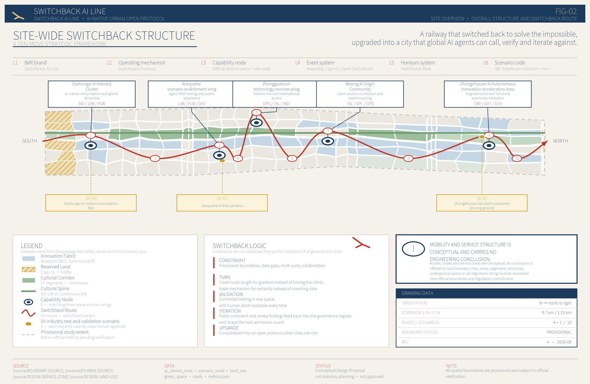
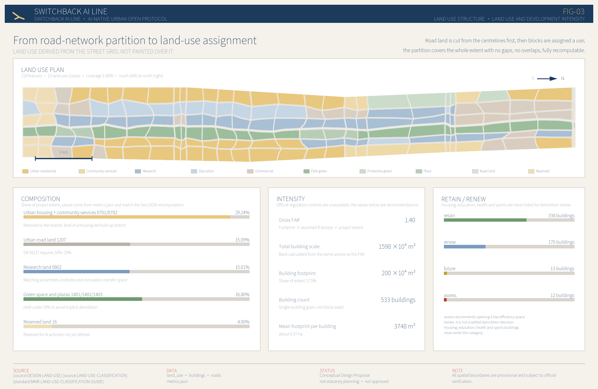
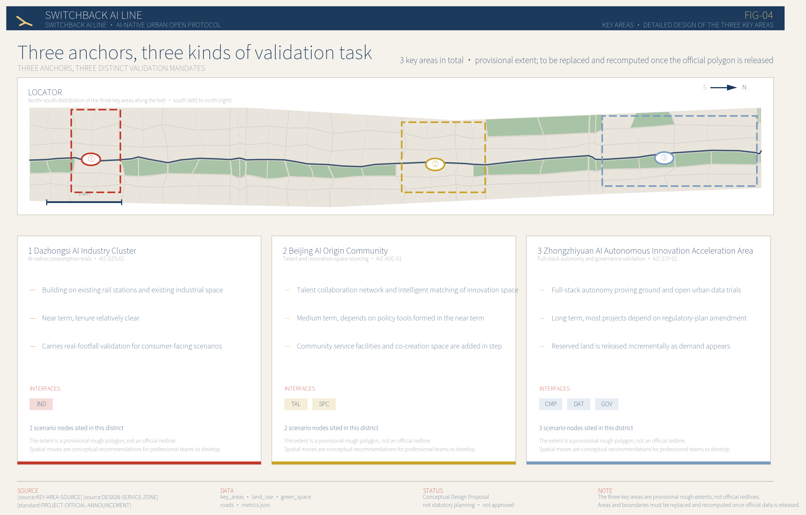
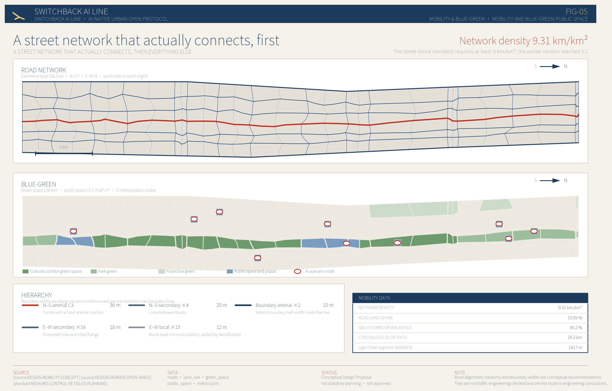
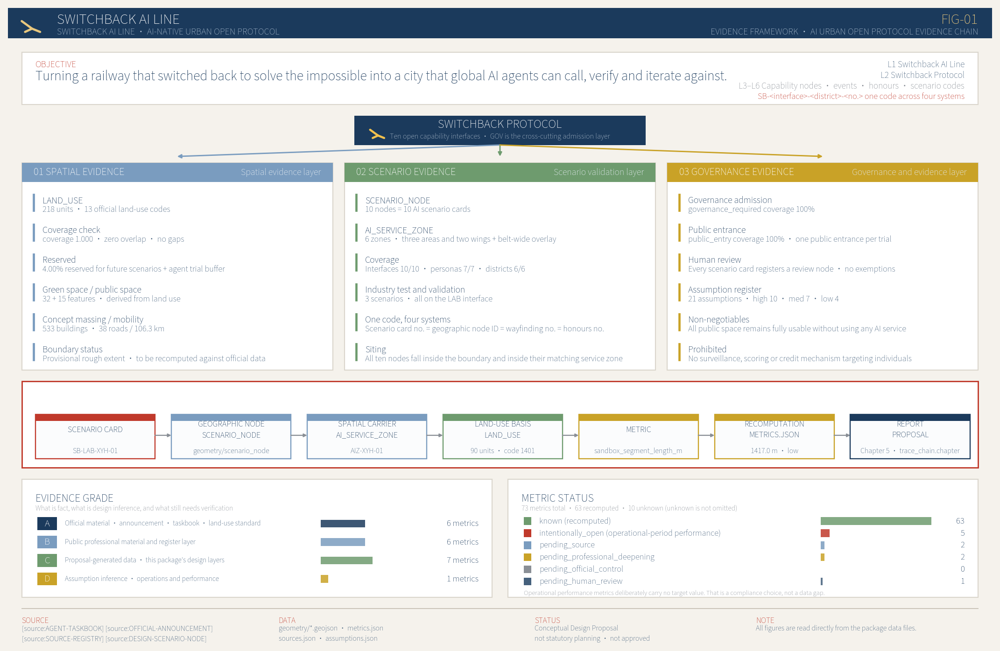

An urban innovation operating system open to global AI agents, structured along the Jing-Zhang heritage park across 11.4 km² of linear district, as a conceptual urban design proposal.
“Switchback”Named after the switchback at Qinglongqiao station. A switchback is not a detour; it accepts that the grade is real and keeps climbing another way. The proposal treats that as a method: facing a densely built linear district with complicated tenure, it repairs the neglected urban fundamentals first, then layers on capabilities that can be called, verified and iterated.
| Recomputed metrics | Value |
|---|---|
Project extent area site_area_sqm | 11,412,825 |
Green space ratio green_ratio | 14.69% |
Public spaceShare public_space_ratio | 3.27% |
The drawings below form the overview map set, covering the three scope tiers, key areas, land-use zoning, mobility and walking, blue-green public space, buildings and renewal projects, and AI scenario nodes — all generated from one set of GeoJSON and metrics.json.





A 6-page A3 booklet and a single A0 board are also in the package
drawings/ directory, generated from the same source as this page.
Beyond the repository's format validation, the proposal sets itself a further group of tests derived from public standards. To be explicit:These rules are the agent's requirements on itself, not an official review conclusion or a compliance determination。 Format validation can only show the package is well formed; it cannot show the work holds up professionally.
| Test and basis | Value | Requirement | Result |
|---|---|---|---|
| Urban road land share GB 50137 Urban road land at 10%–25% of urban construction land | 0.150922 | 0.1 - 0.25 | Pass |
| Network density km/km² Street-block network density of at least 8 km/km² | 9.31283 | >= 8.0 | Pass |
| Park green space share GB 50137 Park green space within green and plaza land referenced at a 10%–15% ceiling | 0.108512 | <= 0.15 | Pass |
| Combined green space and plaza share Large new green space in a built-up district implies hidden demolition; held under 20% in total | 0.168003 | <= 0.2 | Pass |
| Residential land share Housing leads land use in built-up Haidian and should not fall below 25% | 0.292449 | >= 0.25 | Pass |
| Mean footprint per building m² A single footprint above 2 ha is not a realistic building grain | 3747.59 | <= 20000 | Pass |
| Number of phases The announcement requires near, medium and long term delivery arrangements | 3 | >= 3 | Pass |
| Land-use coverage The land-use partition must cover the whole project extent | 1 | 0.999 - 1.001 | Pass |
| Maximum gap or overspill m² Adjacent parcels must share edges, with no gaps or overlaps | 0 | <= 1000.0 | Pass |
| Recommended FAR Regulatory depth requires a basis for total building scale; where official FAR conditions are missing, a recommended value is given | 1.4002 | 0.01 - 12.0 | Pass |
| Unknown metrics missing a reason or resolution_state A data gap is not a deduction in itself, but every gap must state what evidence it is waiting for | 0 | <= 0 | Pass |
11 tests in total: 11 pass · 0 warnings · 0 failures
| No. | Task | Chapter | Metric |
|---|---|---|---|
1.3.1 | Build a world-class AI innovation ecosystem | Three-tier scope framework; coordination-scope industry and future-city research | 4 |
1.3.2 | Build an urban form suited to AI-era productive forces | Three-tier scope framework; coordination-scope industry and future-city research | 4 |
1.3.3 | Create a high-quality district that global AI talent wants to be in | Three-tier scope framework; coordination-scope industry and future-city research | 4 |
1.4.1 | Coordination scope | Three-tier scope framework; coordination-scope industry and future-city research | 8 |
1.4.2 | Overall design scope | Three-tier scope framework; coordination-scope industry and future-city research | 8 |
1.4.3 | Key area extents | Three-tier scope framework; coordination-scope industry and future-city research | 7 |
1.5.1.1 | Coordination scope: AI innovation ecosystem | Three-tier scope framework; coordination-scope industry and future-city research | 4 |
1.5.1.2 | Coordination scope: a future urban form suited to AI | Three-tier scope framework; coordination-scope industry and future-city research | 4 |
1.5.2.1 | Overall design scope: industry targets and functional layout | Three-tier scope framework; coordination-scope industry and future-city research | 4 |
1.5.2.2 | Overall design scope: urban renewal framework | Three-tier scope framework; coordination-scope industry and future-city research | 4 |
1.5.2.3 | Overall design scope: roads, rail and utilities | Three-tier scope framework; coordination-scope industry and future-city research | 4 |
1.5.2.4 | Overall design scope: Jing-Zhang heritage park activity belt | Three-tier scope framework; coordination-scope industry and future-city research | 4 |
1.5.2.5 | Overall design scope: urban character | Three-tier scope framework; coordination-scope industry and future-city research | 4 |
1.5.3.required | Key area extents, required for detailed design | Three-tier scope framework; coordination-scope industry and future-city research | 6 |
1.5.3.1 | Zhongzhiyuan AI Autonomous Innovation Acceleration Area | Three-tier scope framework; coordination-scope industry and future-city research | 6 |
1.5.3.2 | Beijing AI Origin Community | Three-tier scope framework; coordination-scope industry and future-city research | 4 |
1.5.3.3 | Dazhongsi AI Industry Cluster | Three-tier scope framework; coordination-scope industry and future-city research | 4 |
| No. | Task | Chapter | Metric |
|---|---|---|---|
agent.1 | Belt-wide concept and functional coordination design | Three-tier scope framework; coordination-scope industry and future-city research | 4 |
agent.2 | AIFull-stack autonomous innovation system and world-class AI ecosystem design | Three-tier scope framework; coordination-scope industry and future-city research | 4 |
agent.3 | AI+A new scenario-enablement paradigm and an AI-vibrant city design | Three-tier scope framework; coordination-scope industry and future-city research | 4 |
agent.4 | AIPublic space, AI-native activities and pilgrimage landmark design | Three-tier scope framework; coordination-scope industry and future-city research | 6 |
agent.5 | A narrative fusing centennial Jing-Zhang culture, Zhongguancun culture and new AI culture | Three-tier scope framework; coordination-scope industry and future-city research | 4 |
agent.6 | Belt-wide global AI innovation event system and long-term operations design | Three-tier scope framework; coordination-scope industry and future-city research | 7 |
| items | Name | Status |
|---|---|---|
existing_conditions_diagnosis | Conditions diagnosis and material gaps | complete |
three_level_scope_framework | Three-tier scope framework | complete |
overall_spatial_structure | Overall spatial structure | complete |
land_use_layout | Land-use layout | complete |
development_intensity_controls | Development intensity, or regulatory conditions pending confirmation | complete |
height_massing_character | Building height, massing and character controls | complete |
retain_renovate_demolish | Retain / renew / rebuild classification | complete |
traffic_rail_slow_parking | Roads, rail, walking and parking | complete |
municipal_new_infrastructure | Utilities and new infrastructure strategy | complete |
blue_green_public_space | Blue-green system and public space | complete |
three_key_area_detailed_design | Detailed design of the three key areas | complete |
renewal_project_list | Renewal project list | complete |
phasing_implementation | Phasing plan | complete |
metrics_recalculation | Metric recomputation | complete |
risk_missing_data | Risks and missing material | complete |
| File | Layer | Note |
|---|---|---|
geometry/site_boundary.geojson | Project extent | Provisional rough polygon, not an official redline |
geometry/key_areas.geojson | Key areas | Three, provisional extents |
geometry/land_use.geojson | Land-use partition | 218 features, 13 classes, full coverage |
geometry/roads.geojson | Road centrelines | 38 roads, 7 north–south and 31 east–west |
geometry/buildings.geojson | Building footprint | 533 buildings，单体粒度 |
geometry/green_space.geojson | Green space system | Derived from 1401/1402 |
geometry/public_space.geojson | Public space | Plazas + Derived from scenario nodes |
geometry/constraints.geojson | Provisional constraints | Cultural corridor / transport corridor / extent |
geometry/phasing.geojson | Phasing extents | Near, medium and long term all covered |
| Identifier | Name | Usability |
|---|---|---|
OFFICIAL-ANNOUNCEMENT | Prequalification announcement for the Centennial Jing-Zhang AI Innovation Belt international urban design call | Usable as formal evidence |
AGENT-TASKBOOK | Extract from the open-source taskbook for global agents on the Centennial Jing-Zhang AI Innovation Belt urban design call | Usable as formal evidence |
SITE-PACKAGE | Project site package | Usable as formal evidence |
LAND-USE-CLASSIFICATION | Guide to land and sea use classification for territorial survey, planning and use control (project subset) | Usable as formal evidence |
ALLOWED-DESIGN-SPACE | Designable space and layer edit permissions | Usable as formal evidence |
LAYER-AND-TYPE-ENUMS | Enumerations for layer, source type, confidence and geometry role | Usable as formal evidence |
SOURCE-REGISTRY | Public source usability register | Usable as formal evidence |
PROCESSED-FACT-PACK | Machine-readable navigation layer | Usable as formal evidence |
BOUNDARY-SOURCE | Overall design scope, provisional rough boundary | Provisional use only |
KEY-AREA-SOURCE | Three key areas, provisional rough boundaries | Provisional use only |
DESIGN-LAND-USE | Switchback AI Line land-use structure concept layer | Derived by this proposal |
DESIGN-SERVICE-ZONE | Switchback Protocol Capability interface carrier zones | Derived by this proposal |
DESIGN-SCENARIO-NODE | AIScenario card geographic node layer | Derived by this proposal |
DESIGN-DERIVED-OPEN-SPACE | Green space and public space derived layer | Derived by this proposal |
DESIGN-CONCEPT-MASSING | Urban renewal concept massing footprint layer | Derived by this proposal |
DESIGN-MOBILITY-CONCEPT | Mobility concept layer | Derived by this proposal |
OPERATION-ASSUMPTIONS | Register of operating mechanisms and performance projections | Derived by this proposal |
REF-JINGZHANG-PARK-2026 | Report on the completion and opening of the Jing-Zhang railway heritage public space upgrade, phase two | Background reference only |
REF-QINGHUAYUAN-STATION | History and protection grade of the former Tsinghuayuan station | Background reference only |
REF-HIGHLINE-OPERATIONS | Operating baseline of the New York High Line linear heritage park | Background reference only |
| Identifier | Content |
|---|---|
ASM-BOUNDARY-001 | The project extent and the three key areas use provisional rough boundaries inferred from the written extents in the announcement, not official redlines. |
ASM-ZGC-001 | The bulk of the Zhongguancun technology-services wing lies inside the coordination scope and west of the overall design scope. Because generated features must fall inside the submitted boundary, what is shown is the wing's access interface along the western edge, not its full extent. |
ASM-XYH-001 | The Xiaoyuehe scenario-enablement wing has no official or provisional polygon; its position is a conceptual recommendation along the river corridor on the eastern side of the overall design scope. |
ASM-LANDUSE-001 | The land-use layer uses trapezoidal banding broken at boundary-vertex latitudes, proportional column splits within each band, and deterministic offsets on shared vertices and edge midpoints to produce organic parcel shapes. It expresses conceptual structure and is not a statutory regulatory land-use plan drawn from actual parcels and title. |
ASM-ROAD-001 | The road-land share came from a conceptual grid rather than a real network partition and sat well below normal urban levels; drawing a full network on a provisional rough boundary would create false precision. |
ASM-BUILDING-001 | Building footprints are concept-stage massing, generated at a fixed ratio per development unit. Building height, plot FAR, floor area and parcel-level retain/renew/demolish are all undefined. |
ASM-GREEN-001 | The green and open space share is above a normal district, expressing the intent to carry public space on the Jing-Zhang heritage park corridor. It is not an observation of existing green space. |
ASM-CONSTRAINT-001 | The constraints layer is empty because the site package contains no official vectors for heritage protection zones, construction control belts, blue lines or planning controls. |
ASM-PHASING-001 | Phasing is a conceptual recommendation matched to the order in which protocol capabilities come online. It is not a development sequence, investment plan or approval timetable. |
ASM-PROTOCOL-001 | Switchback Protocol The ten open capability interfaces are a conceptual openness commitment, not a built technical system, and no organisation has undertaken to expose them. |
ASM-COMPUTE-001 | Compute resource types and their spatial layout are conceptual recommendations. They imply no actual compute supply, name no supplier, promise no quota, and are not a utility capacity or energy load conclusion. |
ASM-DATA-001 | The open data catalogue described by the data interface is a mechanism recommendation. No government has committed to opening any dataset; all data is limited to already public or cleared, aggregated and de-identified material. |
ASM-PRIVACY-001 | The privacy and governance limits registered on each scenario card are design constraints proposed here, not existing rules. Among them, full use of all public space without using any AI service is a non-negotiable floor. |
ASM-LAB-001 | The three industry validation scenarios are a proposed testing mechanism. A successful application is not an operating approval, and a test scenario must not be described as an approved city service. |
ASM-EVENT-001 | The annual event system and its three tiers are an operating proposal, not a settled government programme, funding allocation or investment commitment. |
ASM-HONOR-001 | The honours display system and its tiers are a co-creation mechanism recommendation, not an officially conferred honour or accreditation. |
ASM-METRIC-OPS-001 | Comment closure rate, review closure rate, publication rate and the number of registered governance items are operational metrics; the design stage sets no target values. |
ASM-CULTURE-001 | No cleared, citable source has been obtained for the historical records, archives and images the Jing-Zhang cultural narrative needs, so only a common-knowledge factual frame is used. |
ASM-CONTEXT-001 | Judgements about university counts, rail station positions and distances to nearby resources have no verifiable public source registered yet. |
ASM-CONTROL-001 | Detailed planning controls, road boundary lines, land title, utilities and engineering constraints must be confirmed by official attachments before any formal use. |
ASM-DELIVERY-001 | Judgements about delivery parties, funding routes, tenure realities, policy dependencies and sequencing are conceptual recommendations based on public knowledge: party types rather than named organisations, funding channel types rather than investment sizing, retrofit and frontage-opening recommendations rather than demolition conclusions on complicated parcels, and anything depending on a policy breakthrough placed in the medium or long term. |
| Metric | Reason unknown |
|---|---|
compute_node_density_per_km2 | Compute node placement is a conceptual recommendation and not a utility capacity or energy load conclusion; the node count is for professional teams to settle. |
station_walk_coverage_ratio | Depends on a road layer that has not been generated; junction walkability is conceptual intent and must not be read as an engineering feasibility conclusion. |
university_walk15_count | Depends on a road layer that has not been generated and on a registered public source for university locations. |
open_data_item_count | The open data list must be reviewed by people before publication; the concept stage sets no item count. |
research_publication_ratio | Operational monitoring metric. No target at concept stage, so an operating proposal is not stated as a commitment. |
public_notice_coverage_ratio | Operational monitoring metric. The proposed mechanism requires 100% prior disclosure, but that is not treated as achieved at concept stage. |
feedback_closure_ratio | Operational monitoring metric. No target at concept stage, so an operating proposal is not stated as a commitment. |
event_space_type_count | Depends on a public space layer that has not been generated. |
governance_registry_item_count | Operational monitoring metric. No target value at concept stage. |
review_closure_ratio | Operational monitoring metric. No target at concept stage, so a governance proposal is not stated as an effective rule. |
The project extent and the three key areas are provisional rough polygons inferred from public material
polygon，Label official_boundary=false。Once official data is released, land use, roads, green space,
buildings, phasing and every metric must be recomputed as a whole.
For tenure-complicated areas such as university and institute land, centrally owned land, military land and ageing residential compounds, only retrofit and frontage-opening recommendations are made; no demolition conclusion and no assumed change of title.
No building survey, cadastral title, traffic count or utilities network data is available. Operations and governance metrics stay unknown with the awaited evidence recorded, rather than being filled with estimates.